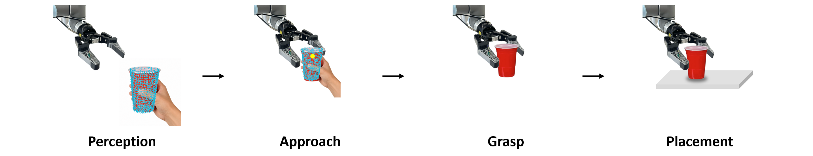

Before Contact
Geometric Uncertainty
- Human-hand occlusion
- Missing or distorted depth
- Transparent surfaces
- Incomplete object extent
- Grasp-target uncertainty
Graduate School of Artificial Intelligence, UNIST
Ulsan, Republic of Korea
MATE adapts an instance-specific object template to incomplete dual-view RGB-D observations and uses tactile sensing to confirm contact during grasping and placement.
static/videos/mate_demo.mp4
Abstract
Human-to-robot handover is challenging when transparent surfaces and hand occlusion produce incomplete or unreliable RGB-D geometry, while vision alone cannot confirm contact during execution. We present MATE, a Mask-guided Adaptive object template estimation framework with Tactile-confirmed Execution.
To recover reliable object geometry under transparency and occlusion, MATE fits an instance-specific object template to dual-view partial point clouds and refines its scale using cross-view mask agreement. A magnet-based tactile fingertip regulates gripper closure and release. Experiments on CORSMAL containers and household objects achieve average success rates of 89.8% and 91.7%, respectively, demonstrating the complementary benefits of geometric adaptation and tactile sensing.
Key Idea
Reliable handover requires both robust geometric perception and contact-aware execution.
Before Contact
After Contact

An instance-specific template is fitted to partial point clouds and scale-refined by cross-view mask agreement to recover geometry under transparency and occlusion.
The refined template and estimated hand state define a grasp target with hand clearance that is continuously updated as the object moves.
A magnet-based tactile fingertip regulates closure at object contact and releases only after detecting support contact during placement.
Method
static/images/perception_pipeline.png
A hand-object detector localizes the object in each RGB view, FastSAM extracts its mask, and valid masked depth pixels are lifted to 3D, filtered, and merged across both views.
For each new object, SAM3D generates a template from a masked RGB observation. Its initial scale is obtained by matching oriented bounding-box extents, followed by ICP registration to the merged point cloud.
Candidate scales sampled around the initial estimate are projected into both camera views. The scale with the highest combined IoU between rendered silhouettes and observed masks defines the refined template.
MediaPipe estimates landmarks and handedness in both views, and the less-occluded hand observation is lifted to 3D. A target on the refined template is chosen for hand clearance and proximity to the object center, then updated online. During temporary detection failure, it is inferred from the tracked hand and the previous hand-to-target offset.
Tactile Execution
The magnet-based fingertip monitors the norm nt of its baseline-subtracted magnetic response. At the grasp target, the gripper closes until nt exceeds the grasp threshold τg, records the contact position, and adds a small closing motion to secure the object. During descent for placement, MATE monitors Δnt = |nt − nr| and stops to release when it exceeds the placement-contact threshold τp.
static/images/tactile_fingertip.png
static/images/tactile_signal.png
System / Hardware
static/images/hardware_setup.png
Results
Success requires stable upright placement, with bean spillage counted as a failure. Each CORSMAL condition includes 18 trials (2 participants × 3 grasp types × 3 locations); each household object includes 6 trials (2 participants × 3 locations).
C1 red cup · C2 small cup · C3 beer cup · C4 wine glass
C3 and C4 were evaluated both filled and as empty transparent containers.O1 soap · O2 beaker · O3 candy-filled plastic bag · O4 food container
static/images/objects_for_handovers.png
| Method | CORSMAL Containers | Household Objects | ||||||||||
|---|---|---|---|---|---|---|---|---|---|---|---|---|
| C1 | C2 | C3 | C4 | C3 Empty | C4 Empty | CORSMAL Avg. | O1 | O2 | O3 | O4 | Household Avg. | |
| w/o Tactile | 66.7 | 88.9 | 88.9 | 61.1 | 55.6 | 72.2 | 72.2 | 100.0 | 66.7 | 100.0 | 33.3 | 75.0 |
| w/o Shape Fit. | 94.4 | 66.7 | 100.0 | 72.2 | 50.0 | 55.6 | 73.2 | 50.0 | 33.3 | 66.7 | 0.0 | 37.5 |
| w/o Scale Ref. | 83.3 | 94.4 | 94.4 | 83.3 | 77.8 | 77.8 | 85.2 | 100.0 | 100.0 | 100.0 | 66.7 | 91.7 |
| MATE (Ours) | 88.9 | 94.4 | 100.0 | 83.3 | 83.3 | 88.9 | 89.8 | 100.0 | 83.3 | 100.0 | 83.3 | 91.7 |
The gripper could keep closing after object contact or release before stable table contact, causing excessive closure or object drops.
Missing depth on transparent objects left the raw merged cloud incomplete, sometimes eliminating valid grasp targets and reducing the household-object average to 37.5%.
Over-scaled templates placed targets outside the physical object boundary. The full system maintained at least 83.3% success in every condition, the strongest worst-case performance.
Conclusion
MATE addresses geometric uncertainty and contact-state uncertainty during human-to-robot handover. Across diverse object types and depth conditions, the complete system achieved at least 83.3% success, demonstrating robust grasping and placement under incomplete RGB-D observations.
Real-Robot Demos
Real-robot demonstrations on the CORSMAL containers and household-object categories used in the experiments.
static/videos/food_container.mp4static/videos/beaker.mp4static/videos/candy-filled_plastic_bag.mp4static/videos/soap.mp4